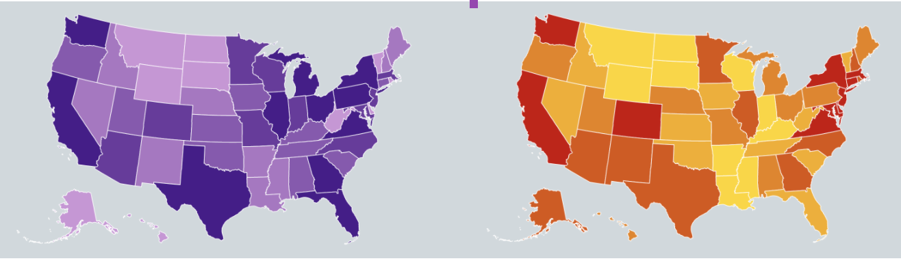
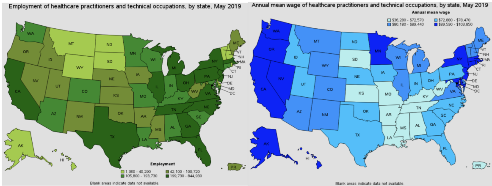
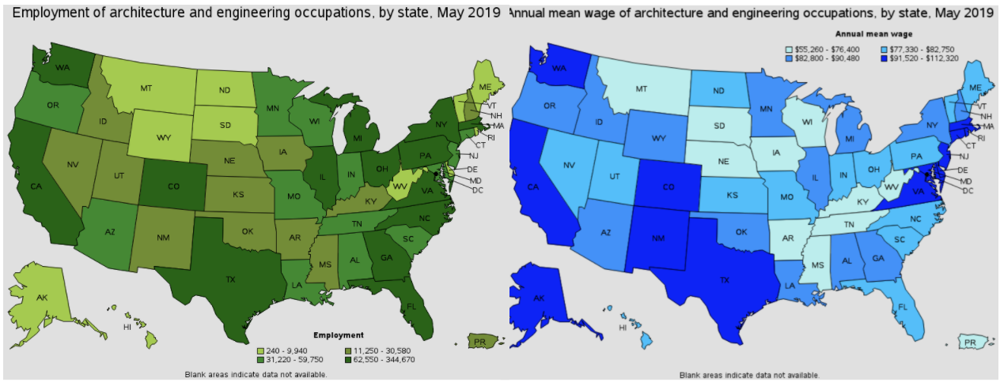
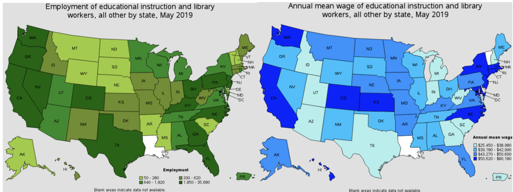
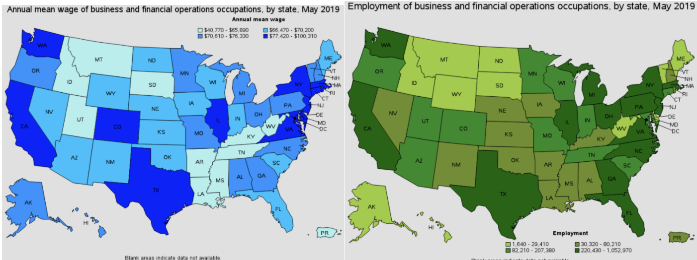
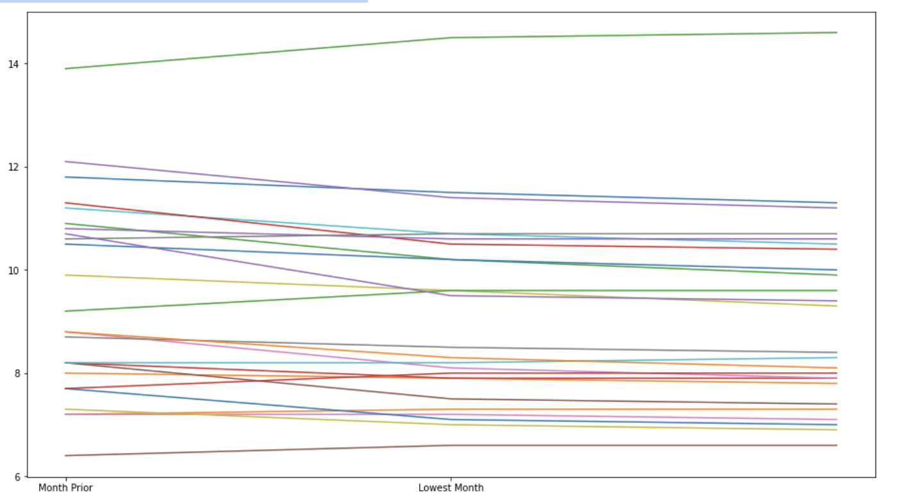

After assessing the trend of unemployment rates monthly since January 2019, compared with the most recent month’s data, April 2020, every single state showed that there was a statistically significant change in the common trend leading up to the most current month’s unemployment data. I used statistical analysis to come to this conclusion, by finding the standard deviation and the “z-score” which is the number of standard deviations from the average unemployment rate this new unemployment rate in April 2020 is. By comparing it to my confidence interval of 5%, or, how often the new data would be significantly significant of any given state having an “out of norm” result, I was able to find that this event is in fact extremely out of the norm.
Why is this? Is every state feeling the effect of “stay at home” orders due to COVID-19? Simply put, yes, but not all in the same way. Many states, such as Hawaii, Tennessee, New York, and New Hampshire, all had low standard deviation, which suggest that unemployment had been steady and very slowly rose/fell before April 2020. Typically, having low unemployment around an average of 4% is a sign of extremely strong economic health. Unfortunately, when the pandemic started to hit the United States as a whole, some were ordered to stay home and limit time spent outside, while others stopped going outside to avoid getting sick. This caused an instant drop in flow of money, which is necessary for a strong economy, and companies reacted by furloughing many of their employees. This rose the national unemployment rate up to 14.7%.
In different ways, each state has their own reason for the significant rise. The current three highest unemployment rates are 28.2% for Nevada, 22.7% for Michigan and 22.3% for Hawaii. Nevada and Hawaii have similar reasons for their significant rise: both profit off tourism significantly. With the worry of catching the virus, many Americans have chosen not to travel during spring break, and as projected, summer break as well. With concerns over sanitation as well, many options such as buffets and casino games are in contact with many people throughout the day, and therefore many companies have opted to close these establishments until a suitable replacement can occur. More than 80% of the workforce in Nevada is centered in Las Vegas, where the “Entertainment Capital of the World” is. On March 18th, 2020, Las Vegas was told to shut down, causing many lost jobs. Hawaii put in place a 2 week quarantine before anyone was to go outside of their hotel, making sunny beach days a 2 week wait. Overall, their tourism industry is suffering.
Michigan, on the other hand, is suffering due to a reduction of those working in the manufacturing businesses. Most of Michigan relies off its manufacturing to make business, but less individuals working means less output which causes a loss in income, since competition between companies will still exist, so raising prices to offset that loss is not an option, thus furloughing workers will be the result.
For the purpose of our research into this aspect, we identify possible job paths that are currently affected and those that can be accomplished remotely. As mentioned before, manufacturing and travel industries are suffering since that work cannot be accomplished at home. Others include the business connection jobs, service industry, such as restaurants and retail shops, and the medical field where there needs to be a physical assessment of the body. Stay at home jobs include several remote IT/tech fields, teaching, and customer service. COVID-19, though taking many jobs and making them obsolete, allows those who choose a career path into these stay at home jobs to live wherever they would prefer. The downfall is when the economy rises and if we find a vaccine or develop herd immunity, the job will be expected to be in person. Overall, our findings concluded that if one wanted to find a reasonable job within their planned field, it may be difficult as businesses are stuffing significantly.
While many industries are undergoing changes as a result of COVID-19, we felt that it was necessary to provide a breakdown of job opportunities per state for specific majors before the virus. The following information is especially key when looking to find a job during COVID-19 because not enough time has elapsed for every job market to shift (with the exception of the travel, tourism, retail, and restaurant markets which we will discuss soon). First, we looked at three categories of STEM majors: medical & healthcare, technology, and engineering. Then, for a humanities and social sciences piece, we looked at economics, business, and education jobs.
The total tech occupations per state in 2019:

| Blue Graph: Job Openings | Orange graph: Employment wage | ||||||||
|---|---|---|---|---|---|---|---|---|---|
| Lavender: | Light purple: | Medium purple: | Dark purple: | Darker purple: | Yellow: | Light orange: | Medium orange: | Dark orange: | Red: |
| 6,340 - 26,728 | 26,729 - 67,604 | 67,605 - 137,805 | 137,806 - 252,312 | 252,313 - 1,148,907 | $60,771 - 68,709 | $68,710 - 73, 441 | $73,442 - 79,851 | $79,852 - 87,842 | $87,843 - 112,928 |
Now, looking at both of the graphs above, the states that would be the best for an individual going into a technology-based career are: Washington, California, Virginia, and New York.These were chosen because they have some of the highest numbers for available tech jobs and the salaries and the salaries that go with them. “Honorable mentions” that are still great options would include: Texas, Arizona, Colorado, Minnesota, Illinois, North Carolina, or Georgia. This all being said, the bottom four states in this category would be Montana, Wyoming, North Dakota, and South Dakota. Data from 2019.
Medical/Healthcare

Looking at jobs in the medical/healthcare industry, it is clear that the states in which individuals would be most successful at finding a high paying job would be: California, New York, New Jersey, and Massachusetts. States that are not far behind include: Washington, Minnesota, Maryland, and Pennsylvania. The bottom four states would be Vermont, North Dakota, South Dakota, and West Virginia.
Engineering Jobs

According to the average salaries and jobs in engineering occupations, California, Virginia, Washington, Colorado, Massachusetts, and Texas seem to rank the highest. The bottom four states would be Montana, South Dakota, West Virginia, and North Dakota.
Teaching

Given the graphs above, we conclude that the following states would be best for a person interested in pursuing a career in education: California, Washington, Colorado, North Carolina, and New Jersey. On the opposite end of the spectrum (the states which are less desirable for educators) we have South Carolina, Wyoming, South Dakota, Mississippi, and New Hampshire.
Business

Like each other occupation above, the top few states for business and finance are California, Washington, Texas, Illinois, Virginia, New York, Massachusetts, and New Jersey. The states that it would be most difficult to find a high-paying job in this industry would be Montana, Idaho, South Dakota, and West Virginia.

For comparison, the following chart was generated, showing a sample of the unemployment rates of 25 states from three months in 2009 during the Great Recession. This is June, July, and December of 2009. This chart was generated using data from the BLS API, and each line shown tracks the unemployment rate of a single state at these three periods. The source code also gather data from the current year, as well as every month, should the reader choose to copy the source code and play with the data themselves. Click this for more information on the coding.
When looking for jobs near the end of COVID-19 and after, it is necessary to consider how each state might recover. To get an idea about which states might be able to recover the most efficiently, we looked at recent statistics for the population density per state and the quality of each state’s healthcare system. The higher the population density, the more difficult it may be for the state to keep the virus from spreading and the longer social distancing practices may be in effect (thereby delaying a return to the usual trends in the job market). The quality of the healthcare system (quality referring to how many people can hospitals handle as well as the medical facilities themselves) is also important in considering each state’s ability to recover from the virus. Because the quality of the medical care per state could very well counteract some of the difficulties that arise with population density, we averaged the ranking of each state in those two categories to create a new ranking of the states.